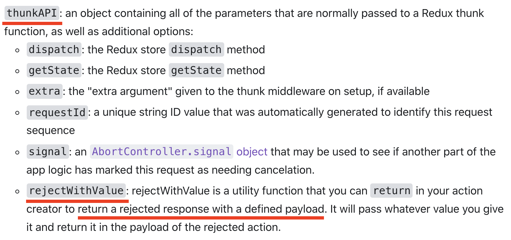

什么是 redux-toolkit
1. 介绍
redux-toolkit 下面简称为 rtk，是一个结合 redux 工具和语法糖的库，目的是为了解决三个问题
- redux 配置复杂（一般 🤔）
- redux 需要添加一些库配合使用（一般 🤔）
- redux 模版代码过多（重点 💪）
2. createAction、createReducer
2、3、4 主要是 API 的简单介绍，详细见官网文档，还有与普通 redux 使用的比较
createAction类似于actionCreater的形式，两者在传参和返回上有些不同
import { createAction } from '@reduxjs/toolkit';
// 使用createAction
const loadUserInfo = createAction<string>('user/loadUserInfo');
// 或者
const loadUserInfo = createAction('user/loadUserInfo', function prepare(id: string) {
return {
payload: {
id,
},
}
});
// 基于actionCreater
function loadUserInfo(id: string) {
return {
type: 'LOAD_USER_INFO'
id
}
}
createReducer用来简化创建 reducer 的函数，内部使用immer大大简化了数据变更的操作
// 正常的userReducer
const initialUserState = {
name: "小明",
age: 18,
sex: 1,
};
function userReducer(state = initialUserState, action) {
switch (action.type) {
case "SET_NAME": {
return {
...state,
name: action.name,
};
}
case "SET_AGE": {
return {
...state,
age: action.age,
};
}
case "SET_SEX": {
return {
...state,
sex: action.sex,
};
}
default:
return state;
}
}
// 基于`createReducer`简化后的`userReducer`
const initialUserState = {
name: "小明",
age: 18,
sex: 1,
};
const userReducer = createReducer(initialUserState, (builder) => {
builder
.addCase("SET_NAME", (state, action) => {
// 无需返回新的对象，直接对state进行操作即可
state.name = action.payload;
})
.addCase("SET_AGE", (state, action) => {
state.age = action.payload;
})
.addCase("SET_SEX", (state, action) => {
state.sex = action.payload;
});
});
3. createSlice
createSlice是由createAction和createReducer组合而成，更进一步简化模版代码
语法：
function createSlice({
// 会添加在action type的前面，[name]/[action type]
// 例如：user/GET_USER_INFO
name: string,
// reducer的初始值
initialState: any,
// 在这里通过object（key-value）形式定义你需要的action和reducer
// key也就是action的名称，只能以string的形式定义
// value有两种形式：
// (state, action) => {} //对state进行操作
// 或者
// {
// reducer: (state, action) => {},
// prepare: (...args) => { return { payload: any} }
// }
// prepare主要在执行reducer函数前对action传参进行修改
// 如果不定义prepare，将会默认把第一个参数作为payload传进去
reducers: Object<string, ReducerFunction | ReducerAndPrepareObject>
// extraReducers用来捕抓指定的action，并做出相应动作
// 自身的action无法捕抓
// 可以自定义捕抓条件
// 如何定义：
// 类似与reducers的object（key-value）形式，key定义捕抓的action，value表示捕抓成功后的相应动作
// 通过builder的addCase、addMatcher、addDefaultCase进行定义
extraReducers?:
| Object<string, ReducerFunction>
| ((builder: ActionReducerMapBuilder<State>) => void)
});
举个 🌰：
function timeout(ms: number) {
return new Promise((resolve) => setTimeout(resolve, ms));
}
const getUserInfo = createAsyncThunk<{name: string; sex: 1 | 0 | -1; age: number;}>(
"user/getUserInfo",
async (payload, thunkApi) => {
await timeout(1000); // 请求接口
return { name: "小明", sex: 0, age: 24 }; // 返回结果
}
);
const loadOrderList = createAsyncThunk<{list: Array<{orderId: number, price: number}>, page: number, total: number}>(
"order/loadOrderList",
async (payload, thunkApi) => {
await timeout(2000); // 请求接口
return {
list: [
{orderId: 1, price: 500},
{orderId: 2, price: 1300},
{orderId: 3, price: 900}
],
page: 1,
total: 3
}; // 返回结果
}
);
const userSlice = createSlice({
name: 'user',
initialState: {
loadStatus: 0,
name: '',
sex: -1,
age: 0,
},
reducers: {
'getUserInfo/pending': (state) => {
state.loadStatus === 1
},
'getUserInfo/fulfilled': (state, action) => {
const { name, sex, age } = action.payload;
state.loadStatus === 2
state.name = name;
state.sex = sex;
state.age = age;
},
'getUserInfo/rejected': (state) => {
state.loadStatus === 0
},
},
extraReducers: (builder) => {
builder.addCase(loadOrderList.pending, (state, action) => {
//...
}).addCase(loadOrderList.fulfilled, (state, action) => {
//...
}).addCase(loadOrderList.rejected, (state, action) => {
//...
})
}
});
4. createAsyncThunk
createAsyncThunk是基于redux-thunk封装的 api，用来处理异步逻辑，创建出来的type有三种状态
例如定义的 type 为user/getUserInfo：
| status | type |
|---|---|
| pending | user/getUserInfo/pending |
| fulfilled | user/getUserInfo/fulfilled |
| rejected | user/getUserInfo/rejected |
在触发
action的时候，就会进入pending状态正常
return会进入fulfilled状态而使用
thunkAPI.rejectWithValue返回则会进入rejected状态（相关 api）

5、createEntityAdapter
createEntityAdapter可以理解为封装 CRUD（增删查改）后的reducer与selector函数
熟练掌握后可以加快列表、字典等业务逻辑的开发速度，不强制要求学习
封装程度较高，建议查阅相关 API 文档学习
6、实践 QA
因为一些原因，没能在实际项目中实践运用，但我写了两个 codesandbox，它们实现了相同的功能，可以对比一下差异
7、总结
优点：
- 使用
slice代替action、reducer，减少文件碎片化 - 使用
immer，大大简化state的操作 - 对于数据操作频繁的项目来说，熟练掌握
createEntityAdapter后可以提高业务逻辑开发速度
优点：
- 存在学习成本，即使熟练运用
redux，也需要一定时间上手 slice复杂度比action、reducer高